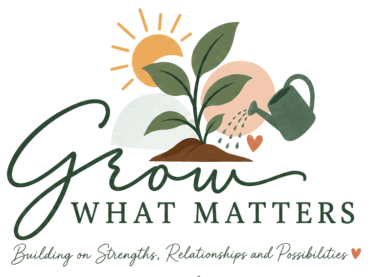

Gympie · Sunshine Coast · Telehealth
Behaviour support that starts with the life you want to build
Most behaviour support begins with the behaviour someone wants to stop. I start at the other end, with what a person is trying to do, what they already have going for them, and what would make the hard days rarer. Then we work backwards to a plan the people around them can actually use.
- Board Certified Behavior Analyst
- NDIS practitioner, Advanced level
- Master of Education (ABA)

Something has to change, and you are tired
- School keeps calling, or has stopped calling
- You are managing the day around one behaviour
- You have had a plan written before and nothing changed
You need someone who answers, and reports that hold up
- Current capacity and honest timeframes, published
- Plans support workers will actually open
- Evidence that stands up at plan review
The approach
We do not start with the behaviour. We start with the person.
My work is grounded in the constructional approach, a way of doing behaviour support that asks what someone is building towards instead of cataloguing what is going wrong. It changes what gets measured, what goes in the plan, and what the team is asked to do on a Tuesday afternoon.
Where you want to go
What does a good week look like for this person? Something their family would recognise, described in ordinary words, and not the sort of goal that only exists to fill a report.
What is already there
Every person arrives with skills, relationships and interests that are working. Support that ignores them starts from zero for no reason.
What the behaviour is doing
Behaviour is always doing a job. Once we understand the job, we can teach something that does it better, more easily and at less cost to everyone.
Who keeps it going
A plan is only as good as the people using it. Training, coaching and honest review are part of the work, not an optional extra at the end.
Services
Three funding lines, one practitioner
Behaviour support is the core of my practice. Early childhood and daily living supports sit alongside it, and they are often the way in when a family knows something is not working but has no behaviour support funding yet.
Specialist Behaviour Support
Functional behaviour assessment, interim and comprehensive behaviour support plans, team training, and restrictive practice reduction.
Funded from Improved Relationships (Capacity Building)
How it worksEarly Childhood
Practical, play-based support for young children and the adults around them, at home, at kindy, at the shops, wherever the tricky bit actually happens.
Funded from early childhood supports or Improved Daily Living
For under 9sImproved Daily Living
Building the skills that make a life bigger: communication, independence, routines, work and community participation, across the lifespan.
Funded from Improved Daily Living (Capacity Building)
Skill buildingNot sure which one you have funding for? Here is how to read your plan, or send it to me and I will tell you what I can see.
How it works
What happens after you get in touch
No mystery, no waiting to find out. This is the sequence, with the timeframes I actually work to.
We have a proper conversation
I want to know what is happening, who is involved, what has already been tried and what you are hoping will change. By the end of it I will tell you honestly whether I am the right person, and roughly when I could start.
Assessment, and I come to you
A functional behaviour assessment means seeing the person where things actually happen: home, school, the day program, the shopping centre. I travel most heavily at this stage, because getting it right here matters more than anywhere else. I talk to everyone who knows them well.
An interim plan, if one is needed
Where there are regulated restrictive practices or an immediate risk, an interim behaviour support plan goes in place first, so that everyone is working to something lawful and safe while the full assessment continues.
A comprehensive plan written to be used
Function-based strategies, in plain language, with the day-to-day detail a support worker needs at 4pm on a bad day. If a plan cannot be followed by the people holding it, it is not finished.
Training, coaching and review
I train the team implementing the plan, then stay close while it beds in. This is usually where I shift to telehealth with less frequent visits. It stretches the funding further and gets more contact to more of the team, which is what actually changes outcomes.
Where I work
Gympie and the Sunshine Coast, every week
I am on the road in Gympie or on the Sunshine Coast every Tuesday and Wednesday. Those are fixed days in my week, and they are where the car actually goes.
South to Brisbane, north to Tin Can Bay, and inland as far as Murgon. Past that I will refer you to someone closer, because the drive stops being sustainable and the support suffers for it.
- Homes
- Schools
- Early learning centres
- Day programs
- Aged care
- Out in the community
Telehealth is available across Queensland, and is often the right call for team training and review.
Towns I regularly travel to
- Gympie
- Southside
- Monkland
- Jones Hill
- The Dawn
- Araluen
- Curra
- Widgee
- Imbil
- Kandanga
- Amamoor
- Tin Can Bay
- Cooloola Cove
- Rainbow Beach
- Kilkivan
- Goomeri
- Murgon
- Noosa
- Cooroy
- Pomona
- Maroochydore
- Nambour
- Caloundra
- Caboolture
Who you would be working with
One practitioner. Named, qualified, and the person who actually turns up.
I am Amy. I grew up on the Sunshine Coast, studied in the United States where I specialised in applied behaviour analysis, and came home. Before starting Grow What Matters I was a program manager in an early intervention centre, then clinical director for a leading provider of behaviour support, daily living and early childhood services.
You will not be allocated to whoever is available. You get me, and you keep me.
- Board Certified Behavior Analyst (BCBA) since 2021, certificant 1-21-54730, publicly verifiable
- Assessed as suitable at Advanced level by the NDIS Quality and Safeguards Commission, 2022
- Master of Education in Applied Behavior Analysis, 2020
- Bachelor of Science in Psychology, 2018
- Blue card and NDIS worker screening current
Why the capability level matters
NDIS behaviour support practitioners are assessed against four levels: Core, Proficient, Advanced and Specialist. Advanced practitioners work independently with complex presentations, including restrictive practice reduction, and supervise others.
Almost no provider publishes this. You are entitled to ask any practitioner what level they were assessed at, and to be told plainly.
I take on a small number of referrals
One to two new referrals a month, and only where I think I can genuinely help. If a referral is not a good fit, clinically or because of where you live, I will say so at the first conversation instead of three months in.
It is the only way one person delivers work worth having.
Common questions
The things people ask before they call
What is positive behaviour support?
Positive behaviour support is an evidence-based approach to behaviour that people find difficult or distressing. It starts by working out what the behaviour is doing for the person: what it communicates, what it gets, what it avoids. From there we build the skills, relationships and opportunities that make the behaviour unnecessary.
Done properly, most of the work happens around the person, in the environment, the routines and the people supporting them. It is not a compliance program.
Which part of an NDIS plan pays for behaviour support?
Behaviour support sits in the Capacity Building budget, under Improved Relationships. That is a separate line from Core supports, and it cannot be drawn from Core.
Early childhood supports usually come from Improved Daily Living or the early childhood supports line. Skill building for older participants comes from Improved Daily Living. There is a fuller explanation on the NDIS funding page.
Do I need a GP referral or a diagnosis?
No. You do not need a GP referral to start behaviour support, and you do not need a new diagnosis. If you have behaviour support funding in your plan, you can contact me directly. If you are not sure whether you have it, send me your plan and I will tell you what I can see.
Can you work with agency-managed plans?
For behaviour support, yes. Agency-managed, plan-managed and self-managed are all fine, because that work is delivered under the NDIS registration of Constructional Solutions.
Early childhood and daily living supports are delivered by Grow What Matters, which is not an NDIS-registered provider. Those services are available to plan-managed and self-managed participants.
How long does it take to get a behaviour support plan?
An interim plan is developed within the first month where there are restrictive practices in place or an immediate risk. A comprehensive plan follows the functional behaviour assessment, generally within the first few months, depending on how much needs to be observed and how many people are involved.
After the first conversation I will give you a timeframe that fits your situation.
Where do you travel, and how often?
I am in Gympie or on the Sunshine Coast every Tuesday and Wednesday. I travel as far south as Brisbane, as far north as Tin Can Bay and inland to Murgon.
Face-to-face visits are heaviest at the start, during assessment, meeting the team, building rapport and delivering training. Once things are established I shift to telehealth with less frequent visits. That stretches the funding further and gets more support to more of the team.
What if we are not in your travel area?
Telehealth is available across Queensland and works well for a lot of the work, particularly team training, plan reviews and coaching. Whether it suits depends on the person and who is around them. If I think you would be better served by someone face-to-face, I will say so.
How quickly will I hear back?
Within 2 business days. If it is urgent, call or text 0426 745 136 and say so.
More detail on behaviour support plans, restrictive practices and NDIS funding.
Ready to talk it through?
Three ways to start. Pick whichever suits you, there is no wrong one.
Send an enquiry
Tell me a bit about the situation in your own time. Best if you are gathering your thoughts, or it is late and the day has been long.
Go to the enquiry formCall or text me
Quickest for support coordinators and anyone who would rather just ask the question out loud.
0426 745 136Email directly
Handy if you already have plan details, reports or a referral to attach.
amy@growwhatmatters.com.auTaking new referrals from October 2026. Enquiries answered within 2 business days.